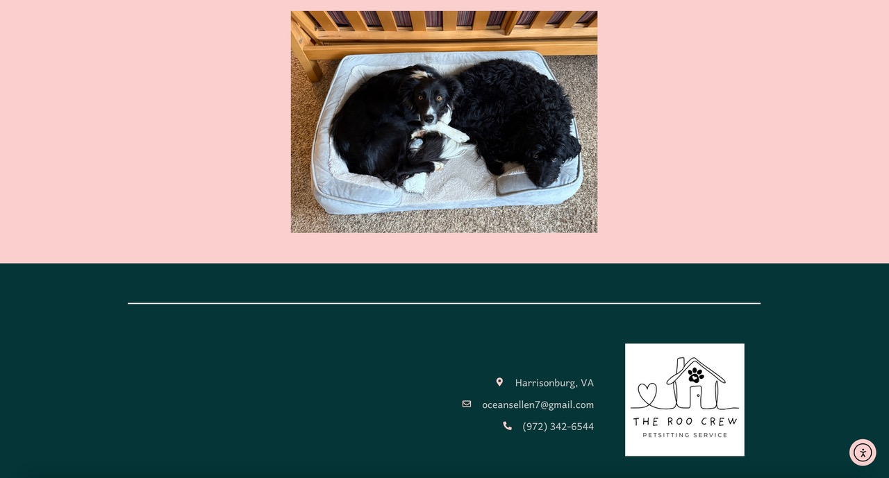
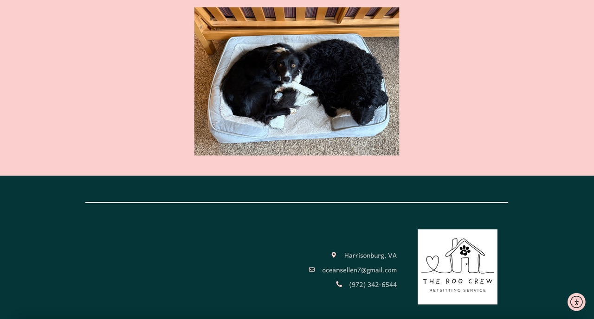

The Roo Crew Website Design
Project Scope: Art Direction, Brand Development and Identity, UX Design, Copywriting, Website Development.
Project Duration: May 2025 (one month).
While working through a full-stack development online course, I began testing my web development skills by building a quirky brand for a local petsitting company. I designed the brand, logo, copy, and website using Adobe products, HTML, CSS, and JavaScript.
A playful, professional brand
Using Adobe Creative Suite, I created a quirky logo for the brand that appears on every page of the website. Most of the website is written from the point of view of the dogs themselves, to lend a playful and comforting tone to the website.
 
